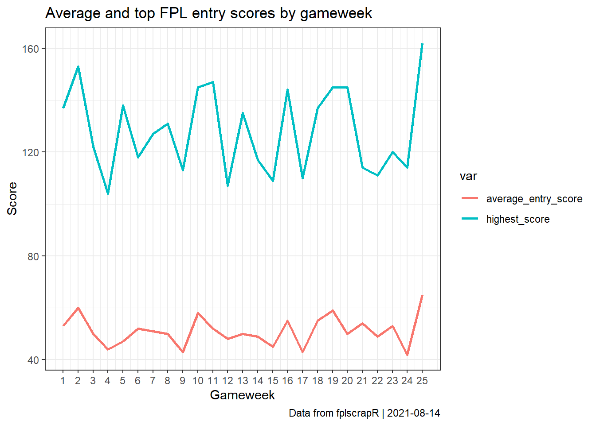

vignettes/entryscores.Rmd
entryscores.RmdSuppose we are interested in tracking the average and top FPL scores by gameweek?
First we fetch the round information for a selection of gameweeks, say 1-25 for the 18/19 season, using the get_round_info function:
Next we use dplyr, tidyr and ggplot2 to transform and plot the data, showing the average and top entry progression by gameweek:
df %>%
select(id,average_entry_score,highest_score) %>% # selecting the relevant columns
gather("var","value",-id) %>% # transforming from wide to long format for ggplot
ggplot() + # plotting using ggplot2
geom_line(aes(x=id,y=value,colour=var),size=1) +
theme_bw() +
scale_x_continuous(breaks=1:25) +
labs(x="Gameweek",y="Score",title="Average and top FPL entry scores by gameweek",caption=paste("Data from fplscrapR | ",Sys.Date(),sep=""))